Bender is a city on the edge of the past and the future. Its de facto government remains anchored in Soviet-era ideals, while its neighbour, Moldova, moves closer to the European Union. It's a unique crossroads for the Russian-speaking population.
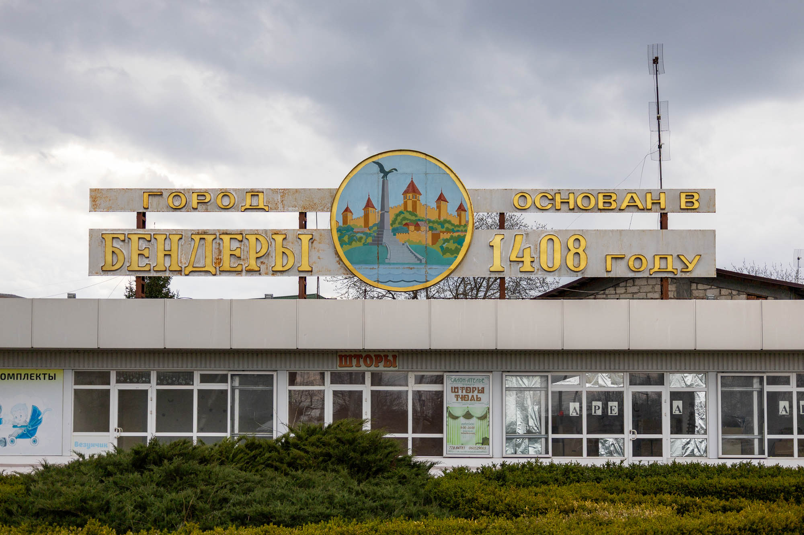
Welcome to Bender
Together with its suburb Proteagailovca, Bender is officially a buffer zone between Moldova and the Pridnestrovian Moldavian Republic (Transnistria), but you wouldn't know it from visiting the town. Passport control happens before you enter Bender, and life is completely Pridnestrovian; language, ruble, and culture.
Located just up the Dniester River from Tiraspol, the city was founded in 1408 and was originally called Tighina by the merchants who used this area as a customs point between the Crimean Khanate and Moldova. It got its name Bender, and its large fortress, when the Ottoman sultan Suleiman the Magnificent conquered the town in the mid-1500s.
Since the brief 1992 war between Moldova and Russia, Bender and Transnistria have been guarded by the Russian military. Based on the ceasefire agreement, Russia can keep up to 2,400 troops in the territory, but since 2006 the number of active military personnel is closer to 1,500.
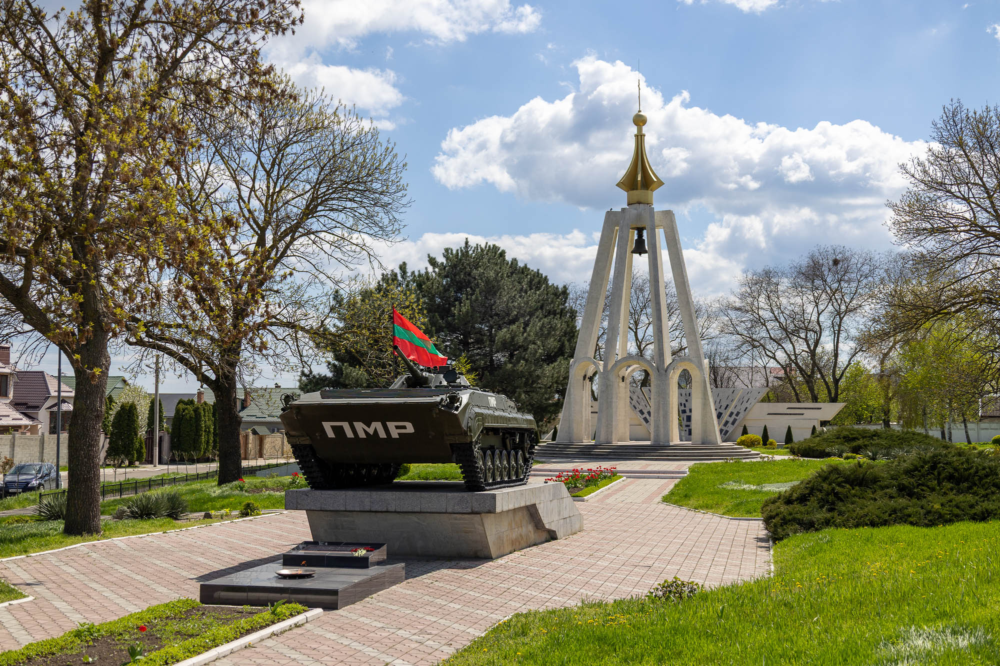
1992 Memorial
The Memorial of Remembrance and Sorrow was established a year after the 1992 war to honour the fighters and residents who died in the conflict. The memorial includes an armoured vehicle, the PMR flag, an open chapel with an eternal flame, and a Memorial Wall.
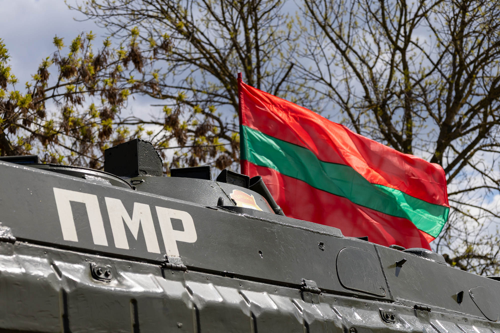
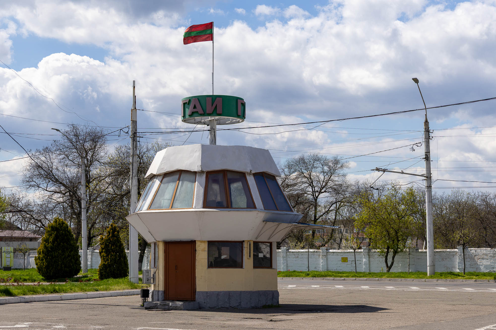
Traffic Police Building
Opposite the memorial is this small, strange, empty building that would have once housed traffic control police. Peeking through the windows, it looks pretty empty and unused, which was backed up by not seeing anyone inside on all three days I visited Bender.
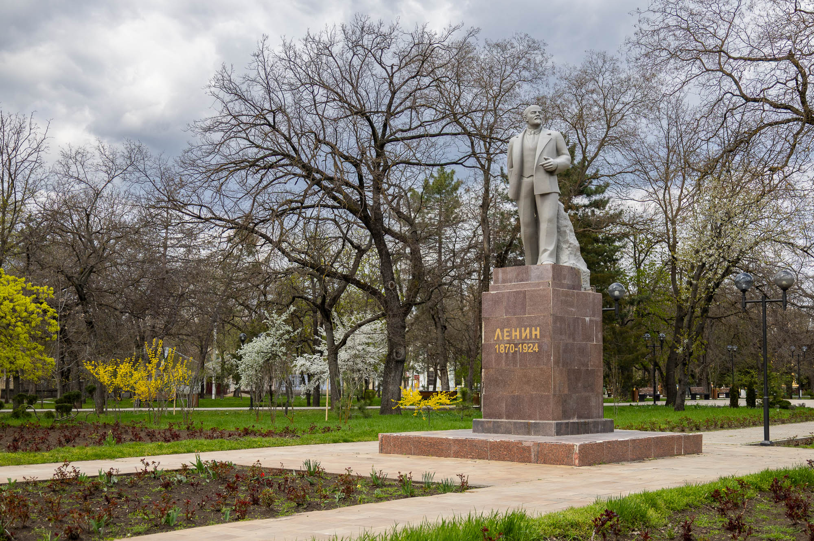
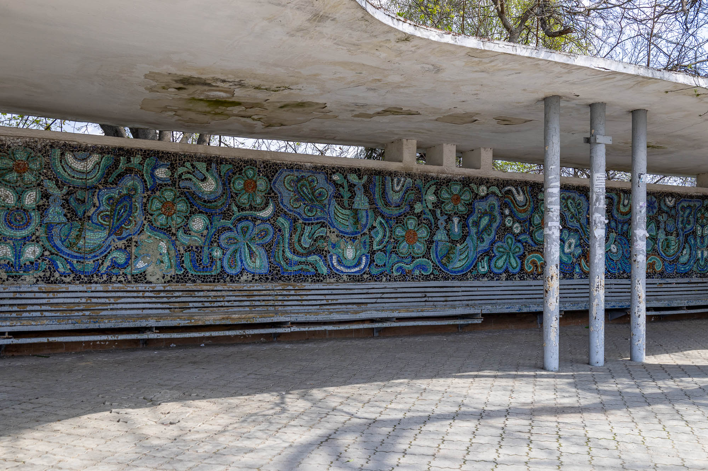
Bus Stop Mosaic
Down on the outskirts of Bender, in the middle of an industrial area, is this beautiful mosaic bus stop. Flowers, plants, and abstract shapes are all depicted in cool blue shades. Fingers crossed, this gets restored before it decays too much more.
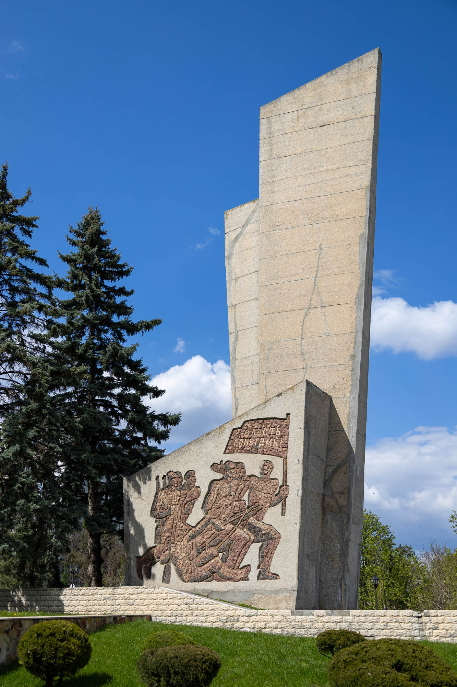
Monument to the Fighters for State Soviet Power
Built in 1969, this monument commemorates the 50th anniversary of a Bolshevik rebellion that was swiftly crushed by the Romanian Army and French colonial troops in this area. One side's mosaic (above), made from Zhytomyr red granite, depicts the beginning of the rebellion, with the other side (below) depicting the end.
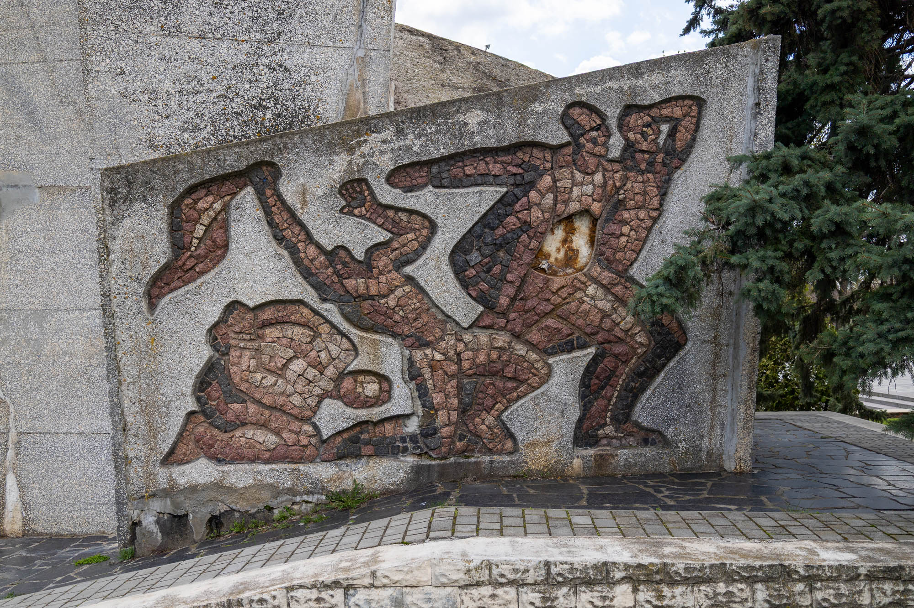
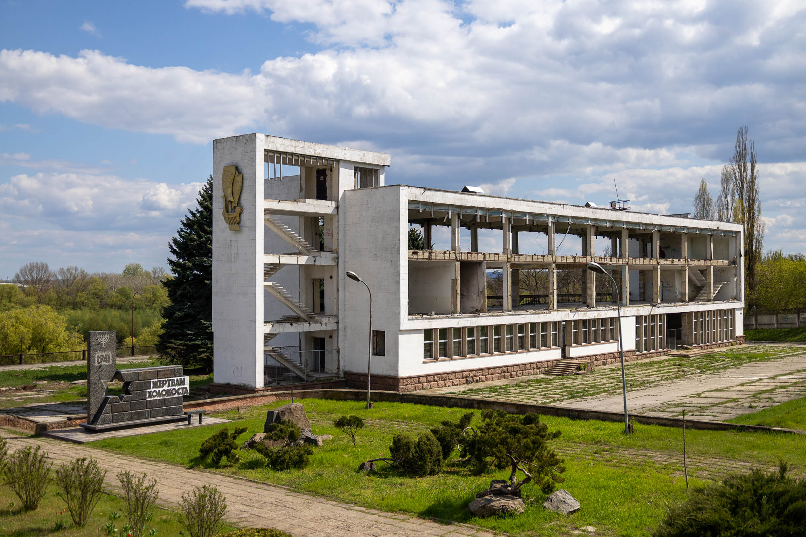
Bender River Port
On the western bank of the Dniester (meaning transboundary river) is the abandoned Bender Port Building and the Holocaust monument in October Park. Once a busy hub for sending stuff up the river into Ukraine, and down the river, also into Ukraine and the Black Sea, the port is now completely abandoned. However, its golden ship on the north wall is in great condition, and the concrete loading dock provides great views over the river.
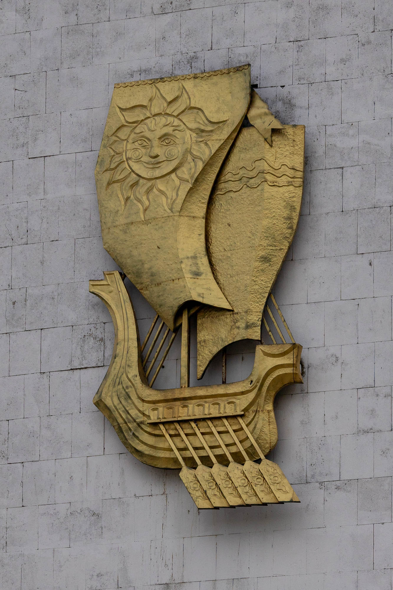
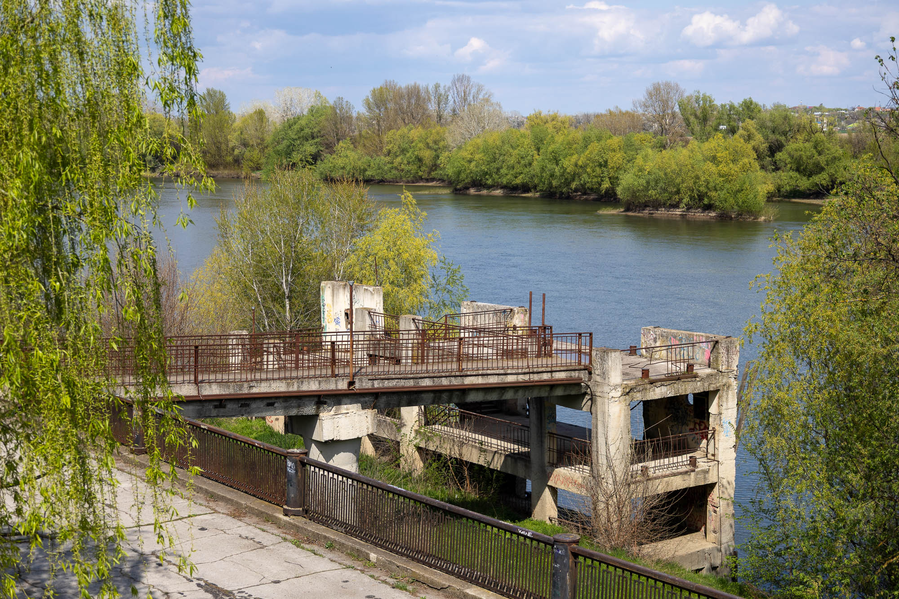
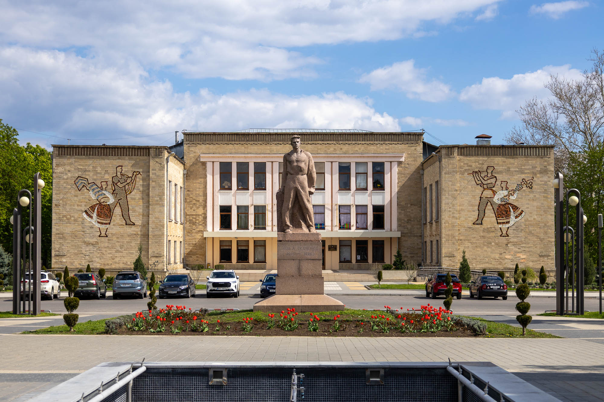
Palace of Culture
No city inspired by the Soviet Union would be complete without mosaics on the front wall of the Palace of Culture and a statue in the courtyard. The statue is of Pavel Tkachenko, a leading member of the communist movements of Bessarabia and Romania in the 1920s. The mosaics represent work and culture in the land of Bessarabia.
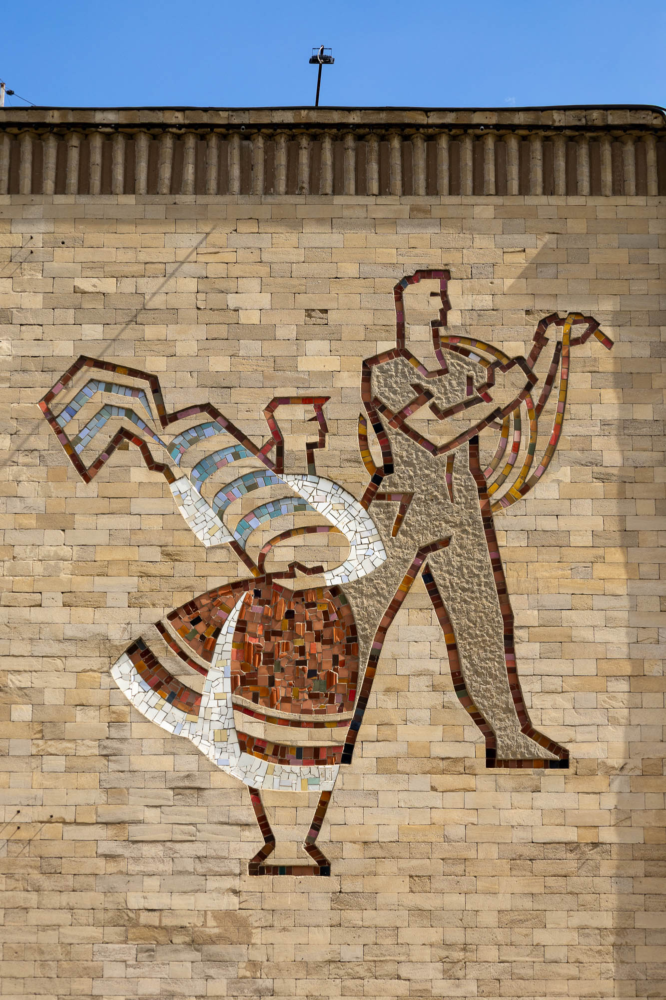
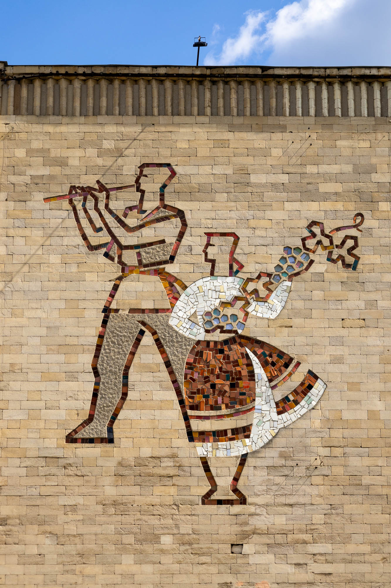